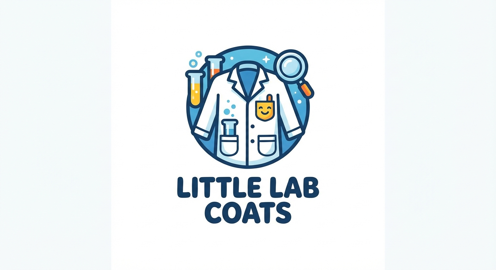
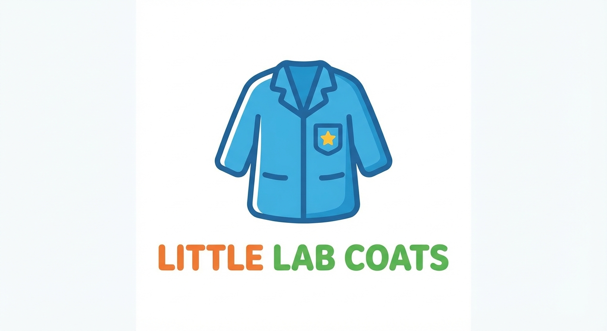
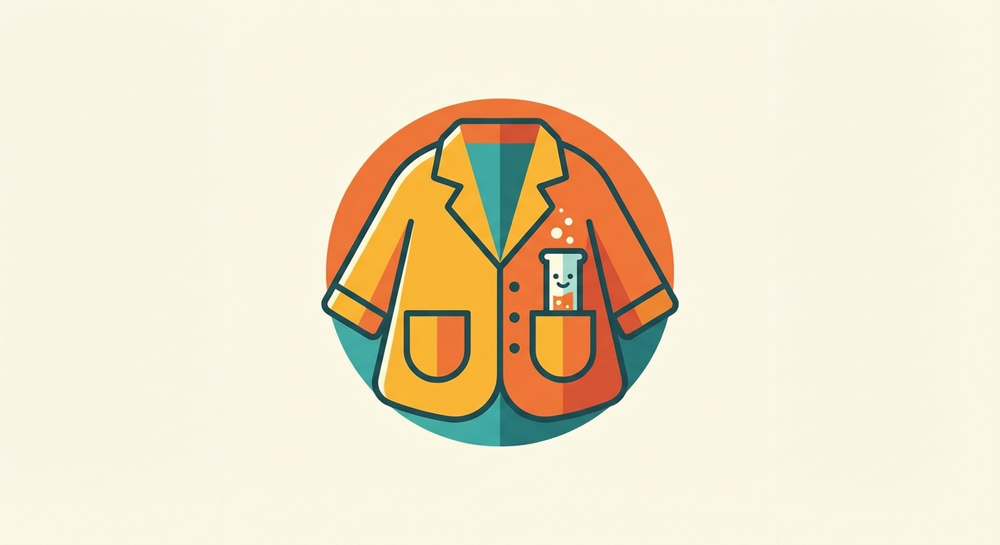
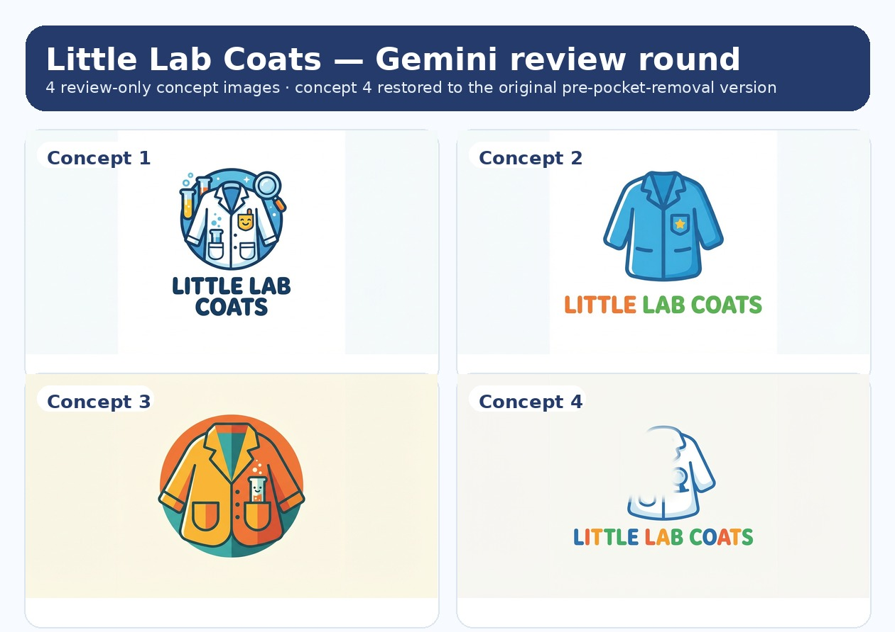

Review only · Gemini-generated · not live
Little Lab Coats — Gemini lab-coat logo concept round
This round is separate from the earlier hand-authored concept pack. These 4 concepts were generated directly through the existing Gemini image generation path, with prompts that kept the lab coat motif as the core symbol and asked for fun, simple, recognizable logo/icon directions.
Generation methodGemini CLI used directly
Concept count4 new Gemini-generated options
Live impactNone — review assets only
Compare fastUse `review-grid.jpg` for in-channel scanning



Quick comparison board

Concise notes
- This round is intentionally separate from the earlier HTML/CSS mock concept pack.
- All 4 images were generated through the real Gemini image path at
/home/cass/.openclaw/workspace/scripts/gemini-image.mjs. - No branding changes were pushed live.
- Best assets for quick in-channel comparison:
review-grid.jpgplus the 4 original JPGs.